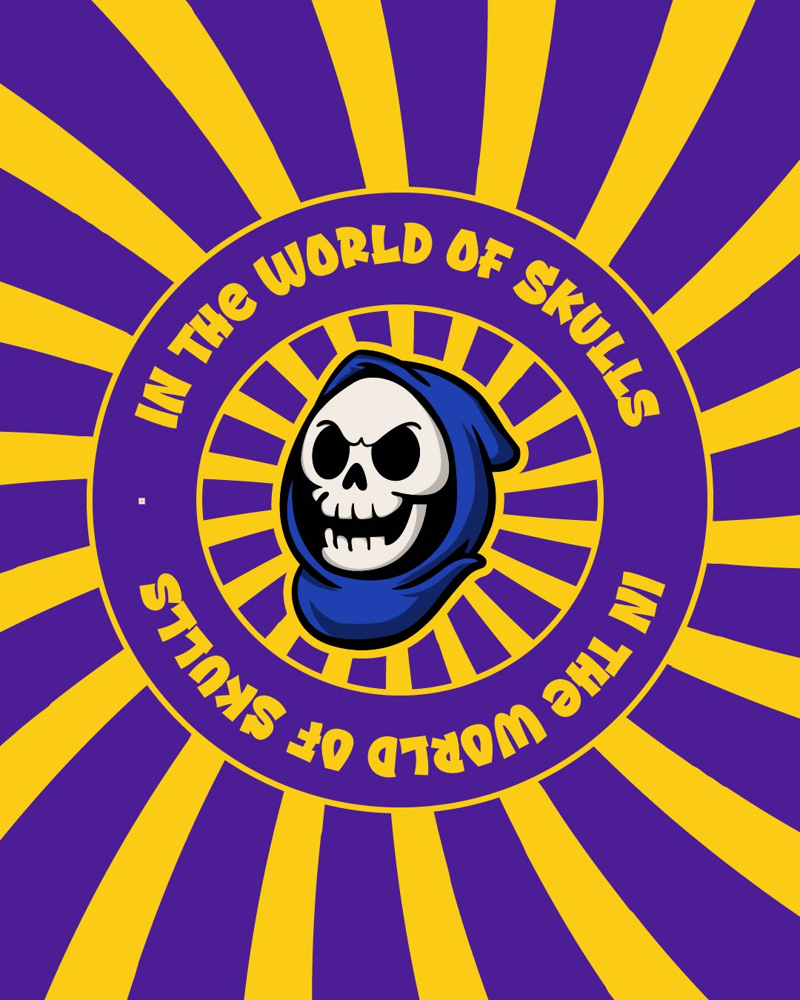
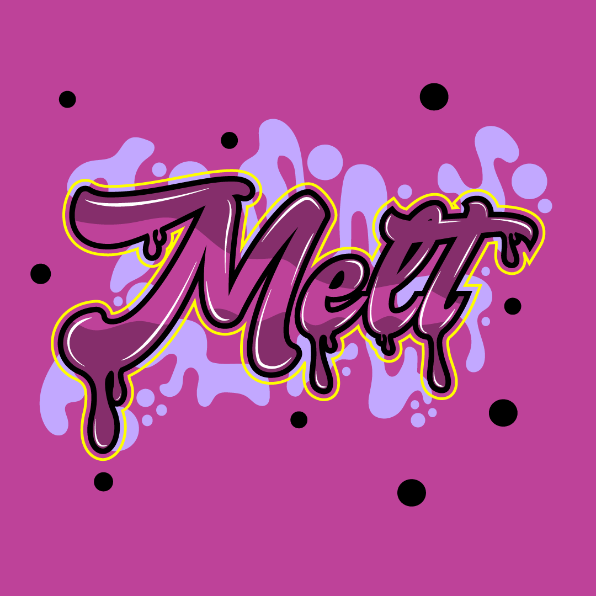
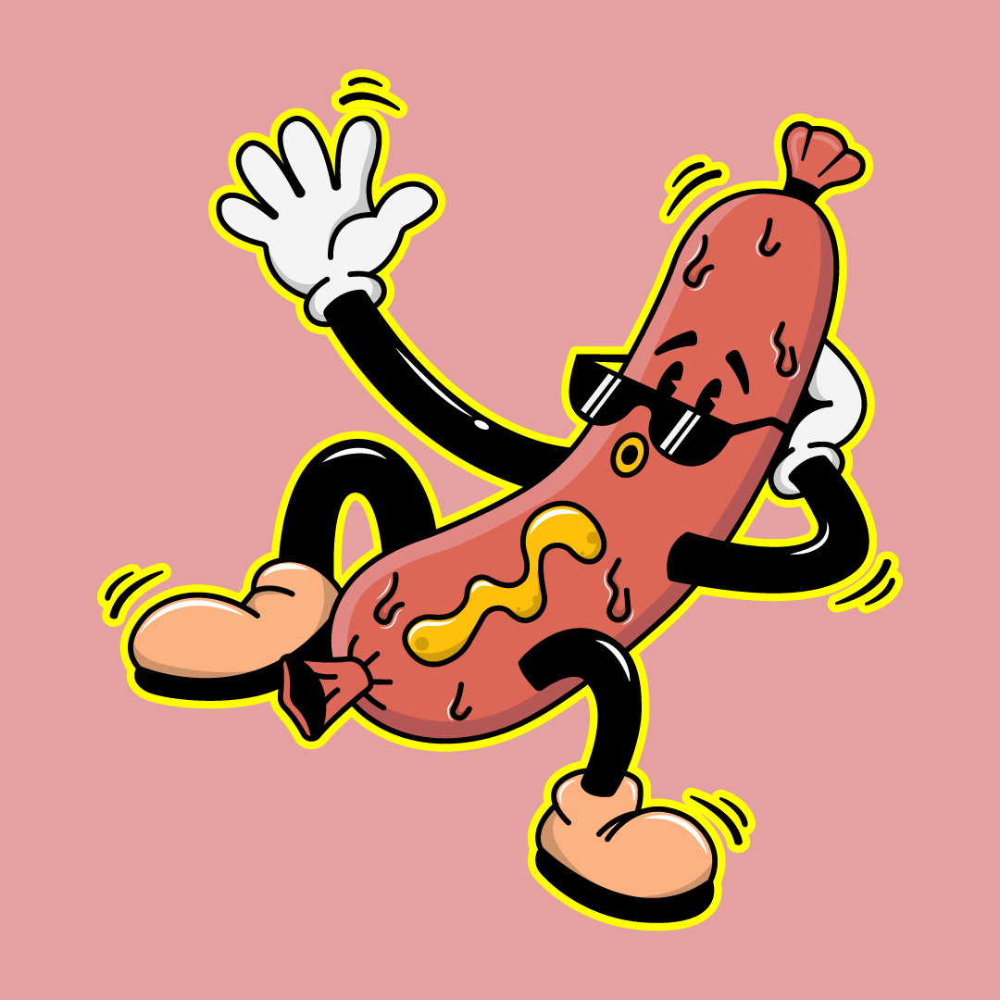

Acerca de mí
Soy Julián, estudiante de producción audiovisual. Combino ilustración, edición de video y animación para crear piezas visuales dinámicas, con enfoque en estilo cartoon y motion graphics.
Este portafolio reúne algunos de mis trabajos mientras desarrollo mi estilo dentro del mundo audiovisual.
Edición
EL ÚNICO
Filminuto musical
Rol: Editor · Actor
CENTRO DE BOGOTÁ
Teaser cultural de la capital
Rol: Cámara · Editor
GROSERÍA O IDENTIDAD
Documental expositivo
Rol: Editor
Motion Graphics

TÍTULO
Descripción del proyecto
Rol: Rol 1 · Rol 2
Ilustración

